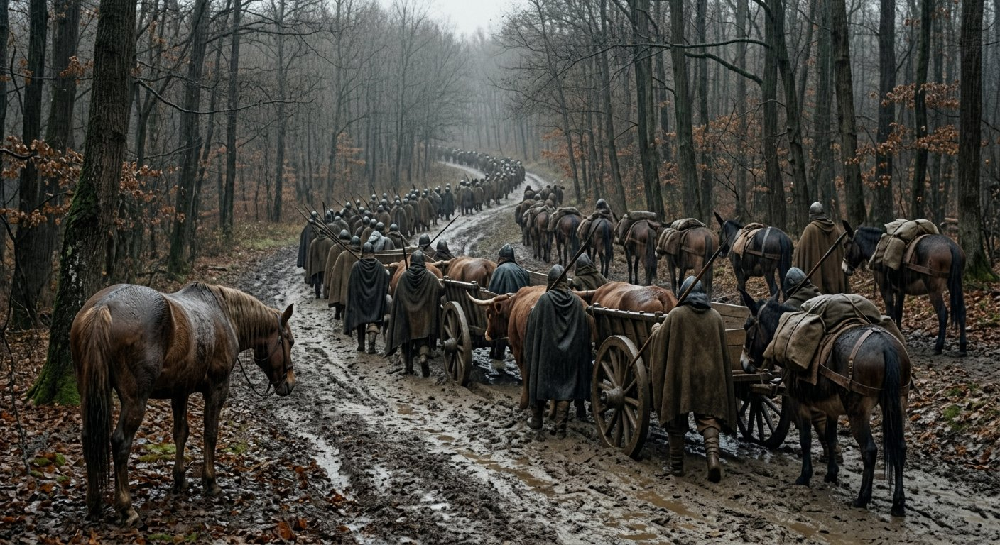
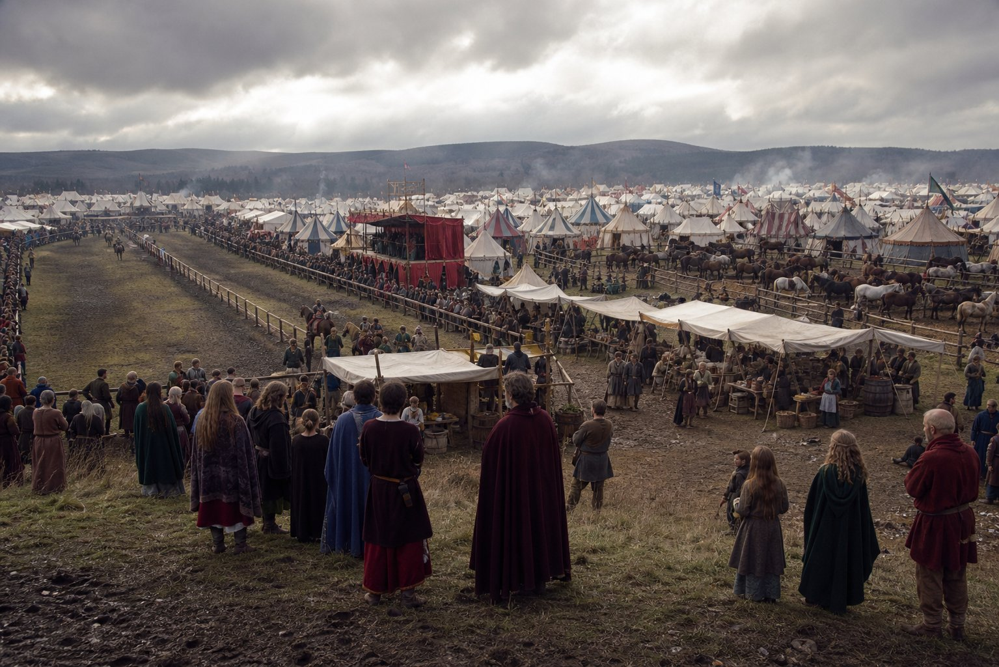
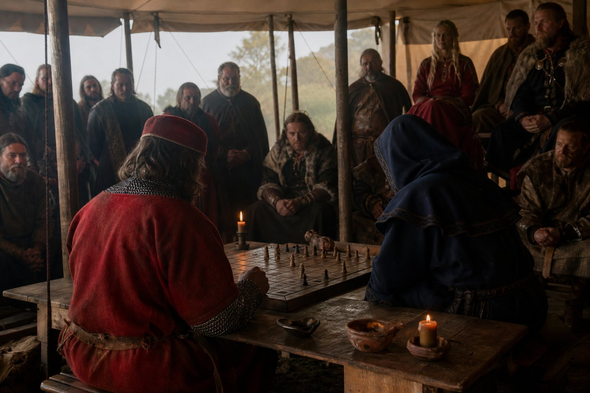
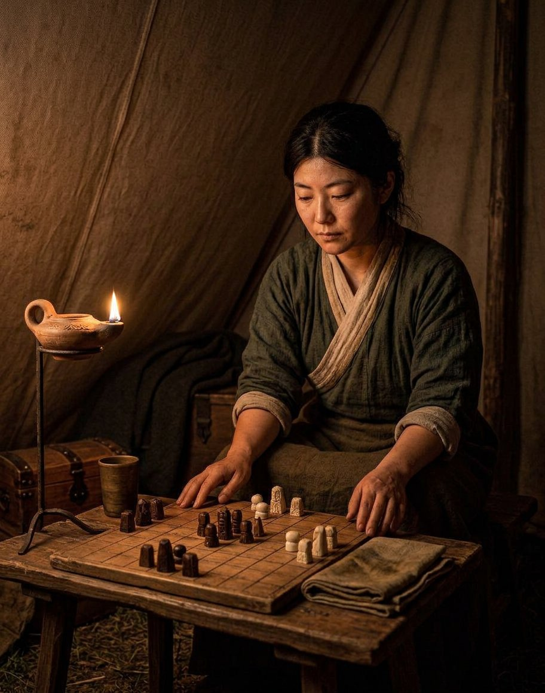
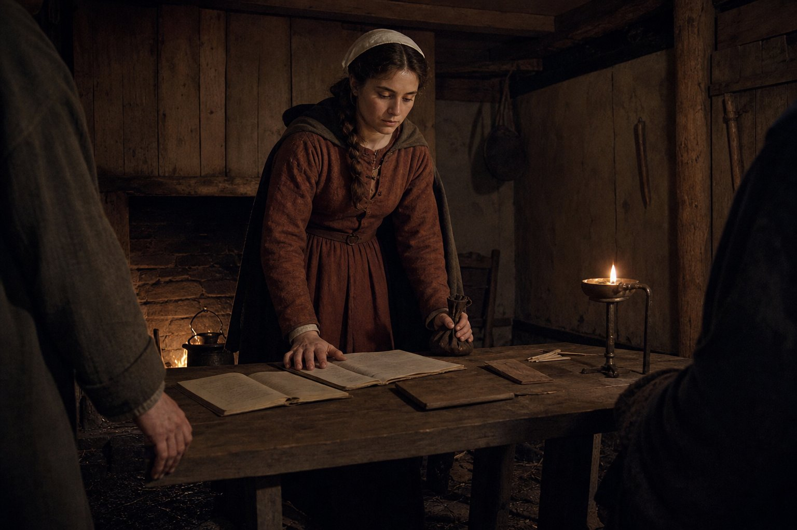
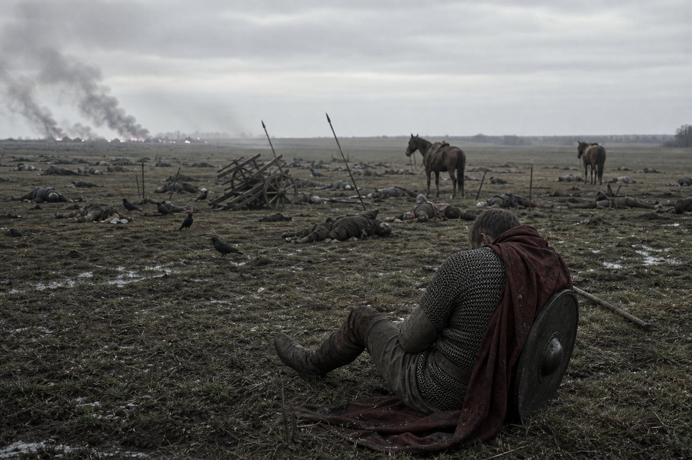
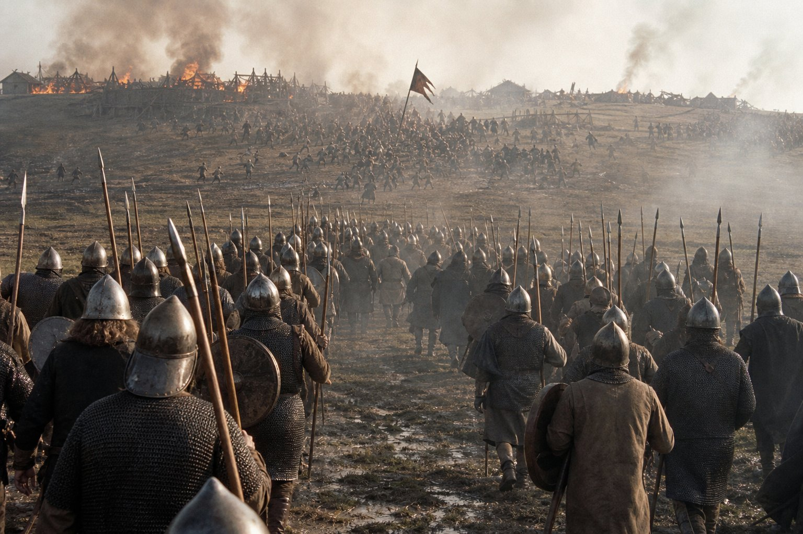
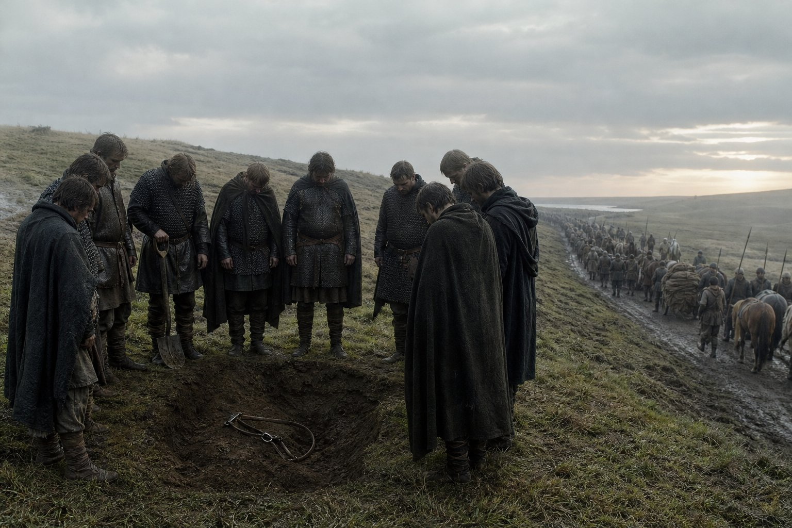
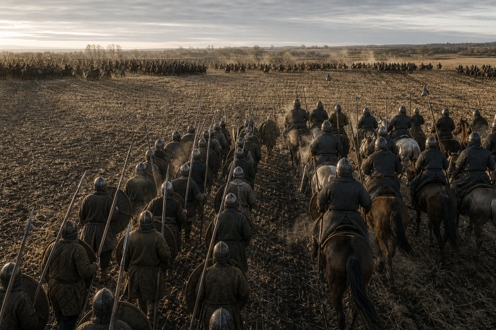
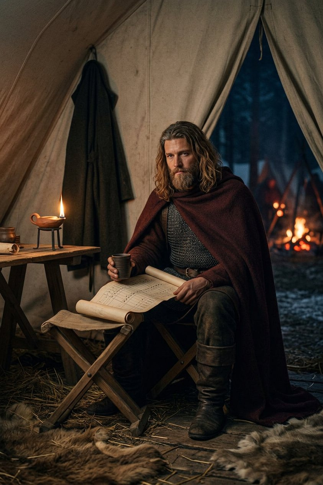

The road to Lippe
We came out of Vidin in the seventh month of 889 with a duke behind us and no county in front of us, and turned north-west into the German lands, which is nine hundred miles for a purse.
I want to put the accounting of that decision first, because I was against it, and because I have been against the last three things this company has done and been wrong about all of them in the same direction. Lippe is a county in the west of the German country, four weeks beyond the Saxons' march, and the Grand Tournament there was held in the ninth month at a town called Marpurch, under the hand of Countess Adela, who is a great lady in that country and had money to spend on being seen to be a great lady.
Nine hundred miles out and nine hundred back, at the head of two thousand men, is forage for eleven weeks in a country where a field of rye has an owner and the owner has a bailiff. I put the figure in front of the Captain at Vidin in the sixth month and he read it and put it down and said: and what does it cost us not to go?
I said what I always say, which is that not going costs nothing. And he said: it costs us everything we are not seen doing. Which is not an argument, it is a proverb with a purse behind it, and I have never yet beaten one of those at the officers' table.
Here is what was true and what I could not put in the ledger. For eleven years this company has been paid to keep things and then paid to change them, and in the last two years it has changed a duchy, and not one man west of the Morava knows it. A name is a thing that has to be carried to the market in person. There is no other way to sell it.
We went up the Danube and then north through the Moravian country and the Bohemian hills and into the Saxon march, and it rained on us for eleven days of the sixteen, and the carts went to the axle in the first week and were dragged out by the men, and by the fourth week nobody was talking about Vidin any more.

That is the thing about a company on the road that no account of it ever has: a victory lasts about three weeks and then it is a story that the men who were there tell to the men who were not, and after that it is only a reason to be tired.
There were two things in the column that I had not seen in it before. The first was a chest, iron-bound, with a parchment in it that had been signed by a count and sealed by a duke and read out in two languages in a stone room at Vidin, and which was worth nothing at all unless a man chose to call it in.
The second was a girl of sixteen riding a mule at the rear of the second company with a satchel of tablets and a purse of her own, who had been in this column since she was eight years old, and about whom I will have something to say later, and who is the only person in it who has ever found an error in my books.
We came to Marpurch in the eighth month, three days before the lists opened, and found that the whole of the German country had got there before us.
The lists at Lippe
A tournament is a labour market, and I have written that before in this book and I will not write it again. What was different at Marpurch was the size of the market.
There were four hundred tents on the meadow and a horse fair that ran for six days and a market that sold cloth from Flanders and wine from the Rheinfranken and a very great number of small German lords who had ridden a week for the privilege of being beaten by a bigger one in front of a countess. The Countess Adela is a widow of about forty who keeps her own court and her own companies, and who understands better than any man I have met in the west that a tournament is a thing you hold once and are talked about for five years.

The contests were the usual five: the duel, the melee, the archery, the races, and the board game. This company entered four of them and took money in two. It did not enter the duel, and I want that written down before somebody at a later date decides that it did: a captain with two thousand men behind him does not go into the lists against a German boy with a horse, and the Captain has never in his life fought a prize fight he could decline.
On the fifteenth day of the ninth month the Captain improved his equipment, which is the record's flat way of saying that he went to the horse fair and spent money.
He bought a German hauberk, riveted and better closed at the armpit than ours, a helm with a nasal and a brow of iron, and a saddle that had been made by a man who had thought about the shape of a man's leg. It came to rather more than a year's pay for a sergeant. Matako watched the whole transaction from the far side of the fair with her arms folded and said afterwards, in her own manner, that he had paid a great deal for the horse's opinion of him, and he said that the horse was not the one whose opinion he had bought.
On the sixth day of the ninth month Matako beat a Duke Erenfried at the board, and on the eighteenth she beat a man called Baldur, who was a champion of that country and had the reputation of never losing in the west. She beat him in the endgame, which is the part of the game she is best at, and it took four hours, which is the part of the game she is worst at.
On the seventeenth the Captain beat a Zhrets Agata, who was a priest of the old Lithuanian gods, fourth in the bracket, in a game that the German lords found so funny that there were men standing on the trestles at the end of it.
A priest of the old faith playing the Emperor's game in a Christian country, in front of a countess, for money, and losing to a Greek from the Macedonian hills who had learned it seven years before — that is what the west thought a tournament was for, and I am not going to pretend I understood it either.
That put the two of them in the final, which meant the company was guaranteed the purse and guaranteed to lose it in the same afternoon. The Countess's steward came to the Captain on the twenty-ninth and proposed that the two of them should play one game for one purse and split it, which is what happens in a company that has any sense.
He refused him. He said that a purse split is a purse nobody won, and that there were four hundred tents on that meadow and every one of them would know by supper which of the two of them had been paid off.
On the thirtieth day of the ninth month of 889 the Captain played Matako, who is the company's smith and my unwilling friend, for the board at Lippe, and I am not the man to write that game, because I am not a player of it and because I was standing at the back of the crowd and could see nothing but the back of a countess and the top of a board.

Matako's page
Chrysogonos has left this page blank for me, which is the first polite thing he has done in the years we have been in the same company, and I am going to use it.
I want it written down that he beat me at Lippe on the thirtieth day of the ninth month of 889, in the final, in front of Countess Adela of Marpurch and four hundred tents.
I had played that game for fourteen years when we sat down and he had played it for seven. I taught him. That is the part I mind, and I have decided to put it in the book rather than leave it out and be praised for my generosity by people who were not there.
I play it the way the officers play it, which is the way it is played: you take the middle, you keep your pieces supported, you count what comes off the board, and you do not give ground you will want in an hour. I am good at it. I was the best in this company for fourteen years and I am still the best of everybody except one man.
He does not play it like that. He sits down as though he has already lost and is working out how not to. He will give you a corner and let you feel clever about taking it. He will put a piece somewhere it can be taken and let you take it and be pleased. Then, forty moves later, you count what you have, and you have more than he has, and you are losing, and you cannot find the move where that happened, because there was no such move. There was only the order he did things in.
The game I lost was the best game I have ever played. I was ahead on pieces from the twentieth move. I had the middle of the board. And when he took the last of my right side I put my hands in my lap and looked at it for a long time and there was nothing on the board that could be saved, and I had not seen it coming and neither had the two counts leaning over the trestle behind me.
He was not pleased with himself. That is the thing I would want somebody to know. He sat there for a moment with his hand flat on the table, and then he came round my side and showed me the move, and then he showed it me again, because he thought I had not understood it the first time, and then a third time, until I told him to stop.
Somebody asked me afterwards whether he was lucky. He is not lucky at the board. He is the most patient man I have ever played, and patience looks like luck to a man who is losing.

The purse at Lippe
The purse was two hundred gold and a cup, and the countess gave him the cup with her own hands in front of the whole meadow, which was the thing he had actually gone nine hundred miles for.
I want to be honest about the money, because there is a version of this chapter in which the tournament paid for the journey and it did not. The purse, the wagers the company placed on itself, the fees for the melee and the archery, and the sale of three horses we had won in the races came to less than the cost of the forage between Vidin and Marpurch.
What we made at Lippe was not made at Lippe.
In the week after the lists the Captain was spoken to by eleven German lords, four of whom asked him where his country was. He told them. Two of them had heard of the Macedonian country, and one of those had heard of it as a place where the Emperor's tax took a different form, which is more than most Greeks in the west could have told you.
Not one of the eleven offered a contract. I watched the whole of it and I will put down what I learned, because it is the lesson of the German lands and it explains four things that happened to this company afterwards: a German lord wants a captain whose father he could invite to dinner. He will hire a stranger to dig a ditch. He will not hire a stranger to hold a gate, because a gate is a thing that a man's cousins can be asked about.
So we sold a name in the west to men who took it home with them and did nothing with it, and we came away with two hundred gold and a cup, and the two hundred gold was gone by the tenth month.
There was one thing that came out of Marpurch that was worth more than the cup, and it came out of a boy of about nineteen who was the countess's second steward, and who asked Matako, in my hearing, how it was that a woman came to be playing in the lists at all.
She told him that she had been asked that question a great many times and that the answer was the same every time, which was that the board does not care who is sitting at it, and that if his lady wished to know how a woman came to be playing in the lists she should ask the man who had just beaten her.
The boy went away. Two days later the countess came to the tent herself and sat with Matako for an hour over the board, and lost, and gave her a ring, and asked her whether she would consider a place in her household at twice the fee she had.
Matako said she would consider it and did not, and told me afterwards that she had said it because a refusal in a tent is a small thing and a refusal in front of a household is a large one, and that she had wanted the woman to have the hour of thinking it might be yes.
Two wars that ended without us
We turned south-east in the tenth month and were in the Bohemian hills when the news came up the road after us, as news does: Bereg had passed to Ljutomisl.
Bereg was the war Prijezda had been given at Vidin in the ninth month of 887 and had been fighting ever since, four companies of ours against Domoszló the Brute, the man who took Severin off Tarasiy in 882 in the two afternoons I have written about elsewhere in this book, while this company was on a pilgrimage in Rome and could do nothing about it.
Domoszló lost. He lost it in the tenth month of 889, to a captain of ours he has never met, on ground I have never seen, while I was counting forage in a country where the farmers paint their barns.
I have thought about that for a long time and I still do not know what to feel about it. Severin was the first county I ever watched go out of a client's hands, and it went because we were eight hundred miles away being pious, and I have carried it since 882 like a stone in a boot. And it was settled by a man called Prijezda and a column of ours in a country I could not find on a map, and I heard about it on a wet road from a Bohemian carter who had it from a friar.
The Captain heard it and asked one question: who signed it? Not how many were killed, not which way the battle went. Who signed it. And when he was told that Ljutomisl had been seated in Bereg by the man who held the county above it, he nodded and went back to the map, and I understood that he had stopped thinking about battles some time in the second year of the Bulgar war and I had not noticed.
Two months later the same road brought the same kind of news from the other side of the mountains. Visegrad had passed to Kocel the Miser in the twelfth month, which was a war this company had taken in 888 and had carried for a year and a half, and which had been won by whoever was standing in the county when the parchment was read.
That is the arithmetic of the year 889 and I want it in the book plainly. Two counties changed hands. This company fought in both wars and won every field it stood on. Both counties went to men who had never seen the company's face, and not one acre, not one toll, not one village came to us.
A battle is a thing a company wins. A war is a thing a county signs. I have written the first of those sentences in this book before and I wrote it as a complaint, and by the winter of 889 the Captain had begun to write it as a plan.
Andjela
On the eighth day of the twelfth month of 889 Andjela Belojevic's education was completed, in a borrowed house two days short of the Danube, and I am going to write the whole of that day down because nothing happened in it and it is one of the four or five days of these years that I would keep.
She came into this company at Leibach in the first month of 882, when she was eight years old, and nobody has ever explained her to me and nobody has ever explained her to the Captain either, and I have stopped asking. There was a girl of eight in a yard with a mule and a bag, and her family were the Belojevics of that country, and the Captain took her in and put her on the roll under the anvil, which is where a smith puts a thing that is not finished.
That was seven years ago. She is sixteen now. She is tall and quiet and she has a way of standing at the back of a room that makes the men in front of her shut up, which is a thing that cannot be taught and which the Captain has.
He taught her letters, in three alphabets, because a girl in this company will end up in three countries. He taught her numbers, which he did himself, from the ledger, every evening when there was a fire, for seven years. He taught her the roll: how to call it, how to strike a name out of it, how a dead man's pay is entered and how a man's kit is valued when he is dead.
He taught her one rule above all of them and he taught it to her the way he teaches everything, which is by doing it in front of her and then making her do it. The rule is: never sign what you have not read, and never read what a man has written for you to read.
On the eighth she was examined, which in this company means that the Captain sat at one end of a table and I sat at the other with the books, and she stood between us, and she had the roll and the pay and the reckonings of eleven months in front of her, and she was asked to find what was wrong.
She found it in my book, on the fourth page, in the third company's shoes. I had entered sixty pairs of boots at a sergeant's rate instead of a private's, and it came to four gold and eleven silver over eleven months, and I had looked at that page six times.
I want it understood that I said nothing unkind. I said that the entry was within a clerk's error and that I would correct it, and she said, without looking up, that it was within a clerk's error and that she had corrected it, and pushed the corrected page across the table.
The Captain did not laugh, because he does not. He took the page and read it and put it down and said: what does four gold and eleven silver buy? And she said: forty days of a cart, or the boots of the fifth company for a year, or one good horse, or nothing at all if you are a man who does not need any of those things.
Then he did the thing I have been leading up to. He took a purse out of his coat and put it on the table and said that it was hers, and that she had a choice. She could keep the books of this company as a paid officer of it, with a wage and a place at the officers' table and the right to strike a name out of the roll. Or she could take the purse and go home to the Belojevics, and there would be no shame in it, and no argument, and the company would take her as far as Leibach on its own road.
She picked up the purse and weighed it and put it back on the table and said that she would keep the books.

And then she asked him the question I had been waiting seven years to hear somebody ask him, which was: will you teach me the game?
He said no.
She asked why. He said: because you will want to win it, and it will not help you.
I have thought about that answer more than any other thing he said in those years. It was not true, or it was not the whole of the truth, because I have watched that game make him a great deal of money and a name in three countries. But he said it to a girl of sixteen who had just found an error in my book, and he said it as though it cost him something, and she did not ask again.
A king's business
In the first month of 890, three weeks after that, the younger Gavril sent for us, and this is the point in this book where the arithmetic stops being about counties and starts being about crowns.
Gavril is the man we fought for two years. He held Vidin in 887 and lost it at the seventeenth day of the ninth month when this company broke his army and took Tepes in the stone room, and he was, for all of that, a Bulgar nobleman with a claim and a grievance and the ear of a great many people in the Bulgar country, and by the winter of 889 he had turned his grievance the only way a grievance goes when it has been beaten often enough, which is upward.
He was raising a revolt against King Vladimir-Rasate of Bulgaria and Moesia, and he wanted companies, and he wanted the largest one in the Balkans standing in his yard, which is the phrase I used about him two years ago from the other side of the argument.
Three new men came into the company that winter: Zdenka, who was a horse-dealer's daughter out of the north and could ride anything with four legs and had opinions about the rest; Lazar, who had been a mason and then a soldier and could bring down a wall that other men said could not be brought down; and Bertalan, who was a Magyar with a broken nose who laughed at everything for the first year and then stopped, and nobody ever found out why.
I argued against the revolt. I want it in the record that I argued against it, because I have been wrong before and I am going to be wrong about this one too, but I argued against it for the right reason. My reason was this: we have never fought a king. A duke is a man with one county and a wall on a river, and when you break him he has nothing left but his household. A king is a man with more counties than he can lose.
The Captain heard me out in the way he does, which is to say he let me finish and then asked me a question that had nothing to do with what I had said.
He asked: who signs a king's peace?
I said: the king. And he said: then a company that has never been in a room where a king signs is a company that will always be hired by the men who are about to be beaten.
That is the whole of the argument and I lost it in ten minutes, and I will add one thing to it that he did not say out loud and that I have come to believe was in his mind, because by the tenth month of 890 he had done it twice. A king's army is a thing that can be destroyed. A king is a thing that cannot. He did not know that yet in the first month. He found it out at Shumen.
Shumen was in the second month, and it was not our battle. The King met the rebels in the field with his household and his tagmata and the whole weight of the Bulgar country behind him, and he destroyed them, and one of the men he destroyed was Tepes.
Tepes of Muntenia. The duke whose throne this company saved at Câmpulung in 884, and whose army we broke at Vidin in 887, and who said to the Captain in a stone room that he could not be forsworn twice in one life, had thrown in with the revolt, and the King took him apart at Shumen in an afternoon and killed three hundred and seventy-one men, and that was all of them, and there was nothing left of Tepes's war but Tepes.
We were not there. I want that written down as plainly as the rest of it: this company was thirty miles east with the baggage when the King destroyed a duke, and we heard it from a rider on the same day, and there was nothing in it for us but the knowledge that a king can do to a duke exactly what we did to a duke two years ago, and can do it in an afternoon, and does not have to hire anybody to do it.

In the third month the King beat Gavril at Brăila, and beat him properly, and by the fourth month the revolt was a thing that had happened, and our side had lost every field it had stood on except the ones we were not at.
That is what a company does when its side is losing: it stays, because the fee is the same either way, and it looks for the place where the arithmetic can be changed. The Captain found it in the seventh month, and I have never seen anything like it before or since.
Brăila
On the field at Brăila, in the seventh month of 890, this company stood two thousand four hundred and twenty-four men in the line, and King Vladimir-Rasate of Bulgaria stood eighteen hundred and eighteen, and for the first time in the eleven years I have been in this trade we outnumbered a king.
All eighteen hundred and eighteen were lost. Twenty-three of ours.
I am going to write the day down properly because it is the largest thing this company had done and because everything that came after it in this chapter is smaller.
The King had his household in the centre, which is where a king puts the men whose pay does not depend on the outcome, and he had his Bulgar horse on the left, and he had the ground, which was a long slope with a wet bottom and a village at the top of it that we burned in the afternoon for the sake of the fence.
We did not do anything clever. That is the thing nobody believes. There was no stratagem at Brăila, no night march, no trick with the baggage. The Captain put the spears in the centre in four ranks with the fifth behind them as a reserve and the horse on the right where the ground was driest, and he told the officers that the line would go forward at a walk and would not stop, and it went forward at a walk and it did not stop.
Eleven years of drill, four hundred mornings a year, and the whole of it comes down to a line of men who do not stop when they are told not to stop. That is the answer to every question anybody has ever asked me about how this company wins its battles, and nobody has ever been satisfied with it.

The King's centre went at the third hour. The household did not run, which is what a household is for. It came apart, which is different: the men in it stood and died and the men behind them saw it and began to look over their shoulders, and once a line begins to look over its shoulder the thing is over, and the winning of it is only a question of how many men a king is willing to spend on being seen to have been there.
He got out. I saw him go, or I saw the thing that was him: a knot of horse going up the slope to the village at a hand gallop with a standard in the middle of it, and our right could not get to them because of the wet bottom, and they went over the crest and were gone.
That is the lesson of Brăila, and I did not understand it until the evening, and I have thought about it ever since. A king is not his army. When we broke Iuga at Câmpulung the war was over in an afternoon, because Iuga had nothing behind him but his household and his household was on the field. When we broke a king's army, the king went over the crest and was still a king, and the war went on, and by the autumn our side had lost it anyway.
The men began to call him the king-breaker after that, which he did not forbid and did not use. I told him what I thought of it, which was that a name like that is a thing lords hear and do not like, and that the men who hire a captain want one who wins battles and not one who wins them against the men who might be hiring him next.
He said: they will hire us because we win. And I said: they will hire us until they are afraid. And he said nothing, which from him is usually agreement, and in this case I have come to think it was not.
Shivamara
On the tenth day of the fourth month of 890, between Shumen and Brăila, Shivamara died in camp of drink, and he was fifty-four years old, and he had been in this company since the Pala country, which is seventeen years.
I have been putting off this page. There is no arithmetic in it, and the arithmetic is the only thing I am good at.
He came to us out of the country beyond the mountains north of the Ganges, in the years when this company was still a thing that could be counted on two hands and a cart, and he was the best horseman in it for a decade, and he was drunk for about half of that, and the two facts were never separate, and every man in this company knew it and none of us did anything about it.
He was not a fool. He was funny in a way that the men liked and that I never entirely understood, and he could bring a horse round on its hocks faster than any man I have ever seen, and he never once in seventeen years asked for anything he was not owed.
The Captain had him up in front of the tent twice that I know of, and fined him once, and put him back in the line the next morning both times, which is what a captain does with a man he cannot spare. There is no other reading of it and I am not going to invent a better one.
We buried him outside a village whose name I have never written down, on the slope above the road, with his bridle in the grave because there was no horse to put in it that the company could afford to lose, and eleven of the company stood there and the rest of the column went past because we were on a war road and the war did not stop.

The Captain stood at the graveside until the last man had gone. He did not speak. He does not speak at graves and I have stood at four of them with him and he has not spoken at any of them, and I have come to think that a man who counts what everything costs knows exactly what a speech would have been worth.
Here is the arithmetic I said was not there, and I will put it in anyway. In the year 890 this company lost a hundred and fifty men to two kings, in two battles, in two countries. In the same year it lost one man to himself, in a camp, in April, on a road, and the man had been riding with us since before I joined.
Beszterce, and the second king
In the fifth month of 890 we took a contract to defend, which was the first time in five years that anybody had asked this company to stand still and let a thing be done to it.
His name was Csaba and the county was Beszterce, and the man coming at it was Feodosia, who had hired this company against Marmaros in 885 and who had been, in the years since, the best enemy we had. She was a woman of about thirty-four who kept her own companies, paid them on the day she said she would, and had never in my hearing broken a term. If I were writing a book about war instead of about a company I would put her in it.
The Captain took the contract at a lower fee than the war was worth, which he does about once a year and which always turns out to be for a reason I find out later.
We held it. It was a dull siege and a great deal of mud, and I was at it, and in the second summer it was still Beszterce's, which is the only measure of a defence that anybody outside a ledger has ever found. The company was paid and came away.
In the same eighth month Kulin of the Transylvanian country sent for us to make a revolt against King Simeon of Wallachia, and the Captain took it in a week, and we were at war with a crown again four months after we had been at war with a crown.
I asked him, in front of the officers, whether he had noticed that the last revolt had ended with our side beaten and the King still on the throne and a duke dead at Shumen. He said that he had noticed, and that the fee was higher this time, and that this was the second king who would have to think about us when he next made a peace.
That is the entire strategic thinking of the year 890, put down as flat as he said it, and I have never been able to fault it since.
On the thirtieth day of the tenth month we fought King Simeon of Wallachia at Ploiești, and this company had one thousand one hundred and seventy-eight men on the field, and the King had one thousand one hundred and fifty-two.
Eleven hundred and seventy-eight against eleven hundred and fifty-two: twenty-three hundred and thirty men in one stubble field, and twenty-six of them the whole difference between the armies. It is the closest thing to an even battle in this book. All one thousand one hundred and fifty-two of the King's men were lost. A hundred and twenty-seven of ours.
We won it in the way that an even battle is won, which is not with a stratagem and not with luck. The drill tells. When two lines of the same size meet, the one that has done it four hundred mornings a year for eleven years turns the other one's flank a little sooner, and a little sooner at the flank is the whole battle, because a line that is being turned will either come round and be broken or stand and be surrounded, and either way it is over inside the hour. And that is why an even battle costs so much more than a great one. At Brăila we had two thousand four hundred men against a king's eighteen hundred and lost twenty-three; at Ploiești we had eleven hundred and seventy-eight against eleven hundred and fifty-two and lost a hundred and twenty-seven. The ratio that people admire in this company is the ratio of two unequal armies. Where the numbers are even, the winning is paid for at the market rate, and the market rate is a hundred and twenty-seven men out of eleven hundred.

I have been asked by men who were not there whether the Captain is a lucky man. I have watched him fight twelve battles. I have never once seen him surprised, and I have never once seen him do anything at the last moment that he had not decided an hour before.
Two kings in one year, a hundred and fifty men, and both kings still on their thrones at the end of it.
What a king is
At the end of 890 this company had thirty regiments, and the last full return anybody can put a hand on is the one from Vidin eighteen months before: forty-seven companions, nineteen hundred and twenty-nine men present of twenty-four hundred. Three had come in since — Zdenka out of the horse country, Lazar the mason, Bertalan the Magyar — and I will give the reader a proper count when the book is closed, because a count half-guessed is worse than no count and this chapter has enough of that in it already. What I will put down is what the year had made: the best name this company had ever had, eleven years of a reputation doubled in one season, and no land at all, not a village, not a toll, not a mill.
There were two counties that changed hands in the winter of 889 because of wars this company had carried for years, and they went to other men. There were two kings beaten in the field in 890, and both of them kept their crowns. There was a duchy made at Vidin in 889, and the debt of service that went with it was still in the chest, uncalled, and had been in that chest for eighteen months.
I have set those four sentences next to each other because that is how the Captain set them, and because in the winter of 890 he began to ask a question about them that I could not answer and that he could not answer either, and I have come to think that the whole of the next part of this book is the answer arriving.
He asked me, by a fire, in the twelfth month, with a cup in his hand and the roll in front of him: what is a king?
And I said what a soldier says, which is that a king is a man with a crown and the men to hold it.
And he said: no. A king is a man whose battles are signed by other people.
I have thought about that in all the years since and I have never found the flaw in it and I have never been able to like it. A duke signs his own battles and loses his county in an afternoon. A king loses eighteen hundred men at Brăila and goes over the crest and is still addressed as your majesty in the spring. The difference between them is not the size of the army. It is that there is a thing called the kingdom, which is not the king and not the army and not the county, and which continues when all three have been beaten.
That is what he had begun to see in the winter of 890, and it was not in the record and it was not in any book, and it was eighteen months' work of watching two kings keep their thrones after he had destroyed their armies.

We went south-east for the winter, back down the roads we had come up, with the chest and the cup and the roll and thirty regiments, and the men counted, and Matako's board wrapped in oiled cloth and put in the cart with the ledgers.
The record does not say what he did that winter and this book has learned to leave those doors shut. It says only that in the first month of 891 we were at Beszterce again, in the snow, and that Feodosia was there with six hundred and sixty-six men, and that the Captain had a war of his own to finish and a woman to take alive, and that neither of those things turned out the way anybody expected, including him.